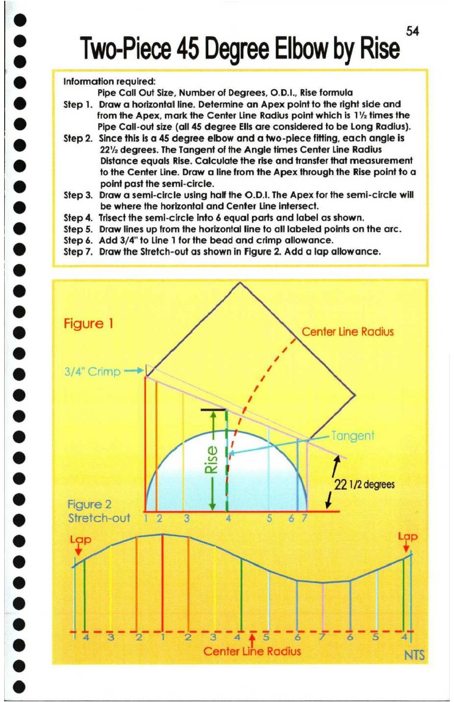

54. Two-piece 45 Degree Elbow by Rise

© —— Two-Piece 45 Degree Elbow by Rise .
@ Information required:
Pipe Call Out Size, Number of Degrees, O.D.I., Rise formula
@ Step 1. Draw a horizontal line. Determine an Apex point to the right side and
from the Apex, mark the Center Line Radius point which is 1’ times the
i) Pipe Call-out size (all 45 degree Ells are considered to be Long Radius).
Step 2. Since this is a 45 degree elbow and a two-piece fitting, each angle is
@ 222 degrees. The Tangent of the Angle times Center Line Radius
9 Distance equals Rise. Calculate the rise and transfer that measurement
to the Center Line. Draw a line from the Apex through the Rise point to a
re) point past the semi-circle.
Step 3. Draw a semi-circle using half the O.D.1. The Apex for the semi-circle will
@ be where the horizontal and Center Line intersect.
Step 4. Trisect the semi-circle into 6 equal parts and label as shown.
@ Step 5. Draw lines up from the horizontal line to all labeled points on the arc.
Step 6. Add 3/4" to Line 1 for the bead and crimp allowance.
@ Step 7. Draw the Stretch-out as shown in Figure 2. Add a lap allowance.
@
Figure 1 ‘ ;
@ 9 Center Line Radius
@ 3/4" Crimp >
e 22 1/2 degees
@ Figure 2 /
3 Stretch-out 1 2 3 4 5 6S
@ rf ss
° Ll ye 2 ==
Center Line Radius NTS